上級編では廊下に掲示されていた６枚のパネルと、問題用紙の内容を組み合わせて解くものとなっておりました。 なおどれも難問だったため、表紙のQRコードを読み取ると出てくる解答確認も使うと便利だったかと思います。
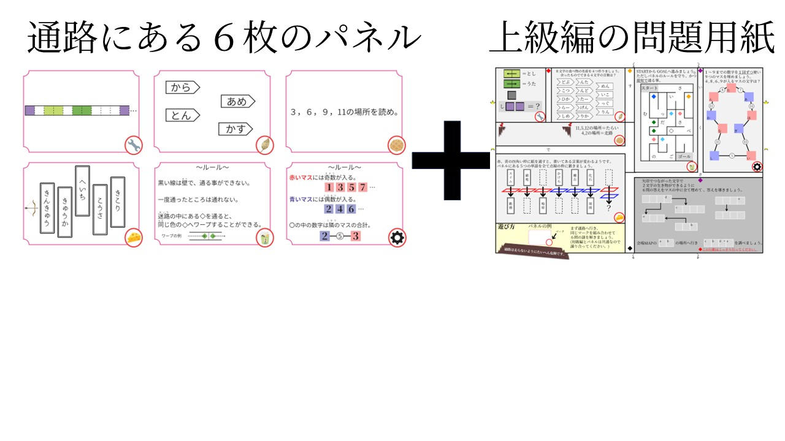
ではまず最初に解く６問の解説を行います。
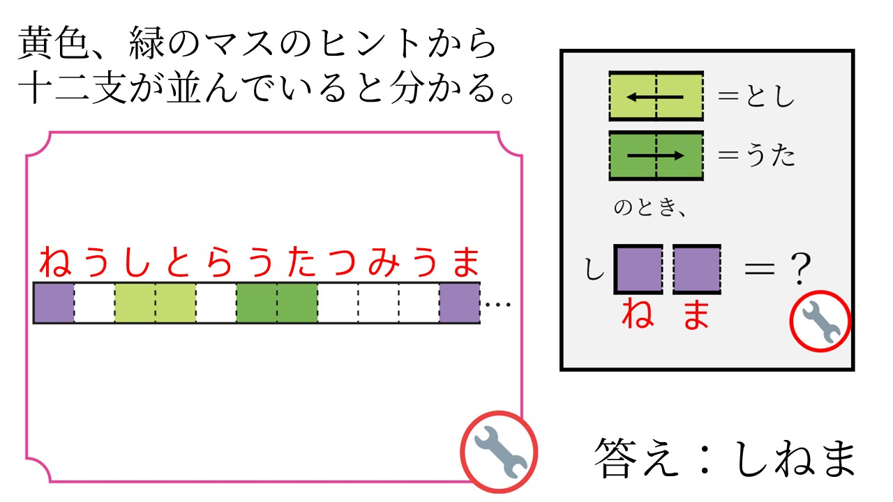
黄色と緑のマスを矢印の向きで読むと、「とし」「うた」が入るようです。
「？？しと？うた？？？？」と入れていくと十二支が入るのではないかと推測できます。
答えは「しねま」でした。
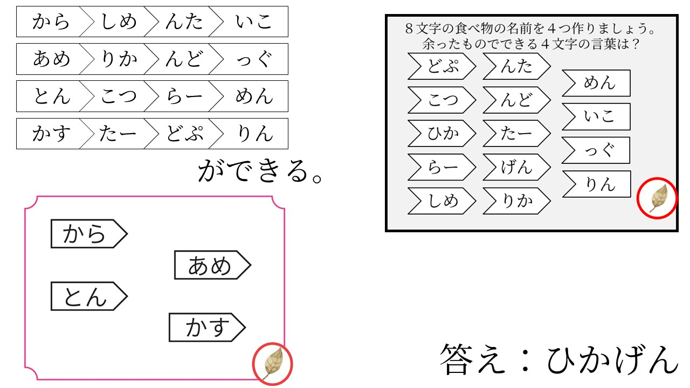
パネルのピースと問題用紙のピースを組み合わせて、８文字食べ物の名前を４つ作る、という問題でした。
一つ一つ候補を消していくと、「辛子明太子」「アメリカンドッグ」「豚骨ラーメン」「カスタードプリン」を作る事ができ、
残ったピースでできる答えは「ひかげん」でした。
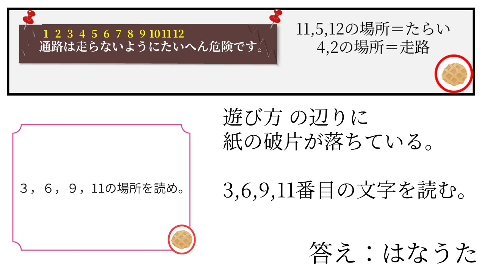
一見何も情報が無いようですが、何か破れているものがあります。どこかに落ちてしまったのでしょうか。
問題用紙の下の方を見ると紙の破片が落ちていました。これを復元すると11,5,12文字目はたらい、2,4文字目は走路と読めます。
パネルの指示通り3.6.9.11文字目の場所を読んでみましょう。答えは「はなうた」
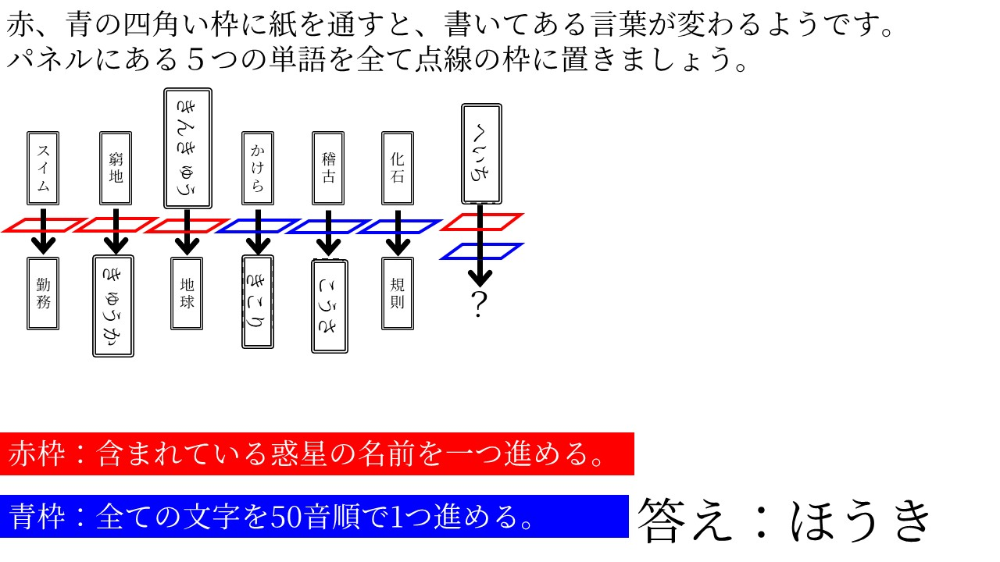
赤枠と青枠で書いてある文字が変わる法則を推理する問題でした。
赤枠は「すいむ」から「きんむ」に変わったため、含まれている曜日が変わったかと思う方もいたと思いますが、他の法則が成り立ちません。
そこでこれは、惑星の名前「すいきんちかもくどてんかい」を含んでいる場合、一つ進める法則だと推測できます。
また青枠は「かせき」から「きそく」に変わっており、ひらがな表記にしてすべての文字を50音表で１つ進めている法則だという事が分かります。
あとはパネルの紙を当てはめていき、答えは「ほうき」
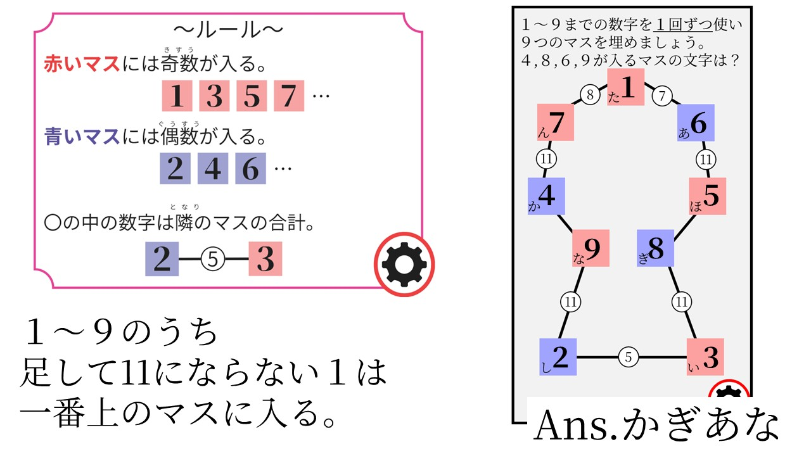
一見数字の場所を確定できる場所が無いように見えますが、
１～９の数字のみを使うため、合計が11になる組み合わせに１が使われない事に気づけば一番上に１が入る事が分かります。
あとはルールに従って埋めていき、答えは「かぎあな」でした。
この盤面が鍵穴の形になっている事に気づいた方もいたかもしれません。
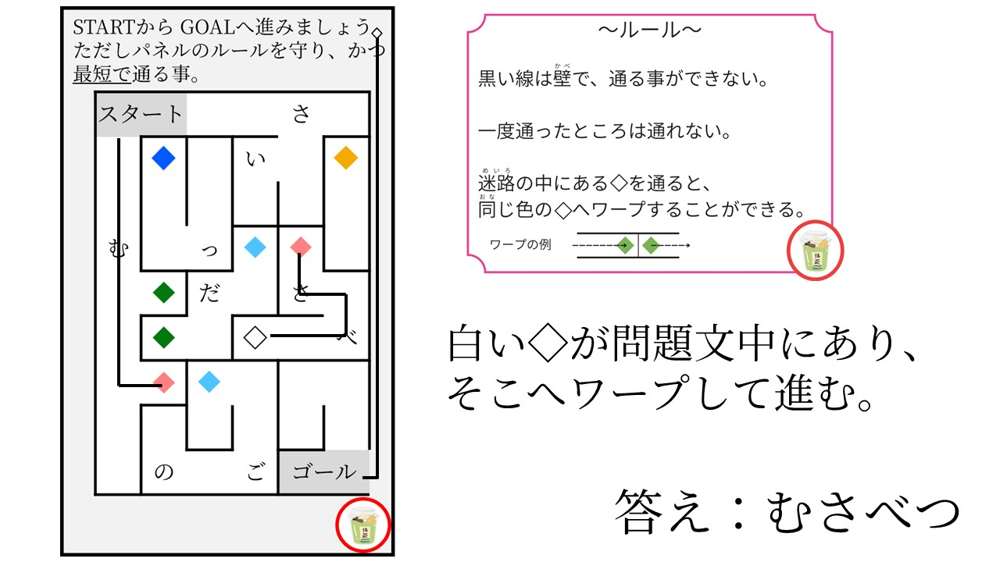
同じ色の菱形でワープする迷路です。
白の菱形でワープした時にその先が無いし、なによりゴール周辺にワープできる菱形が見当たりません。
そこで問題文に白い菱形が使われていることに気づけばそこからゴールにたどり着けます。
答えは「むさべつ」。
６つの答えを、矢印で結ばれた２文字が生き物の名前になるように埋める必要があるようです。 条件に合うように答えを埋めるとこのようになります。
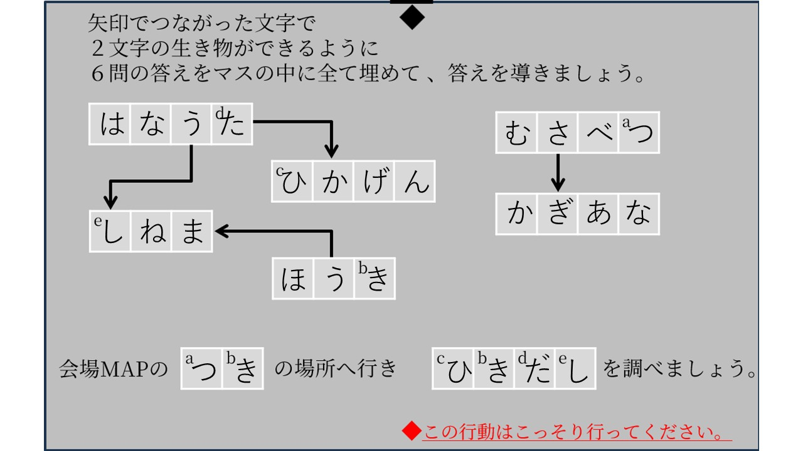
矢印で繋がったマスでは「たか」「さぎ」「うし」「うま」ができます。
出てくる指示は「会場MAPの月の位置へ行き、引き出しを調べましょう」
問題用紙の会場MAPを見ると、ロビーの近くに月のマークが書いてありました。
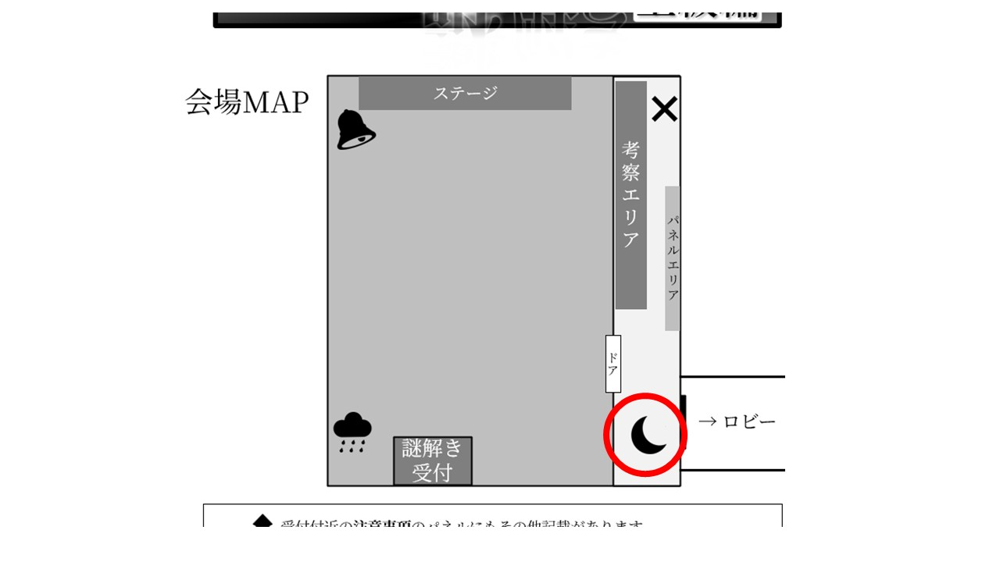
実際ロビーへ行き引き出しを調べると、このような紙がありました。
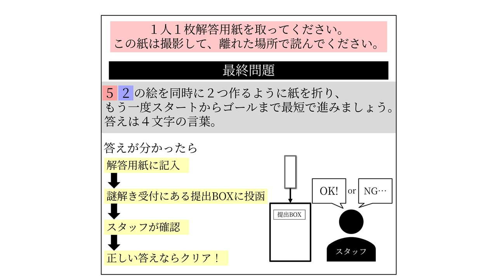
５２と書かれた色付きマスは歯車のパネル、算数パズルのマスと同じでした。
５のマスには「ほ」２のマスには「し」が入っていたため、
「２つの星を作るように紙を折り、もう一度スタートからゴールへ進め。」
という意味になります。
２つの星は問題用紙にありました。折るとこのようになります。
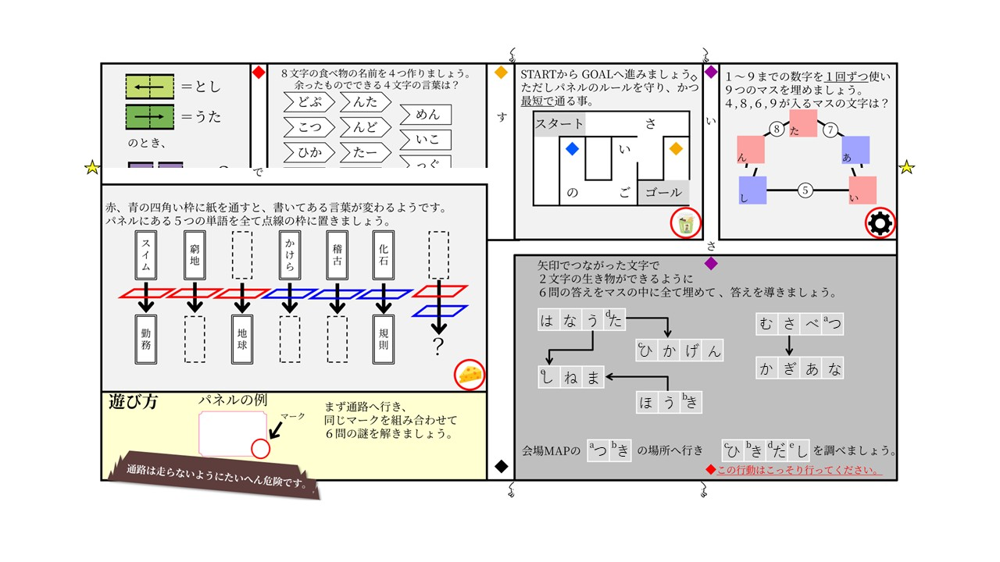
スタートやゴールは抹茶オレの問題にありました。紙を折った事で迷路の形が変わっています。
先ほどの問題と同様に同じ色の菱形にワープしていき通った文字を読んでいきましょう。
表紙の注意事項にも同じ菱形がありました。
辿っていくと、「最後の答えはさいてんです」という文章が出てきました。 あとはこれを解答用紙に記入し、謎解き受付にある提出BOXに提出することが出来ればクリア……かと思われましたが、 スタッフからはこんな事を言われました。
「不正解です。提出する直前までは正解な気がしたんですが……」
これが本当の最終問題でした。
一度ここで状況を整理しましょう。
「さいてん」という言葉を解答用紙に記入し、その後その解答用紙を提出BOXに入れました。
しかしスタッフから不正解と判定されました。
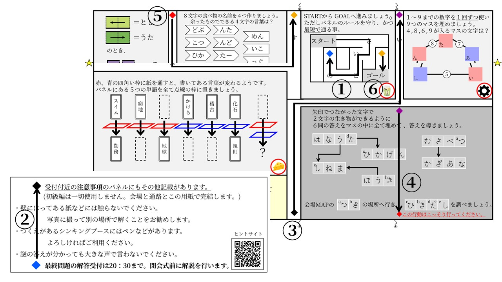
であれば、この提出BOXに何か仕掛けがされているのでしょうか？
例えば、「解答用紙に書いてある内容が変わる」なんてこととか。
「紙に書かれた内容が変化する」という現象を、ここまで解いた方であれば一度は目にしているはずです。
それはチーズのパネルを使って解いた赤青の枠線の問題。
「枠線を通すと書かれた内容が変わる」としっかり書いてあります。
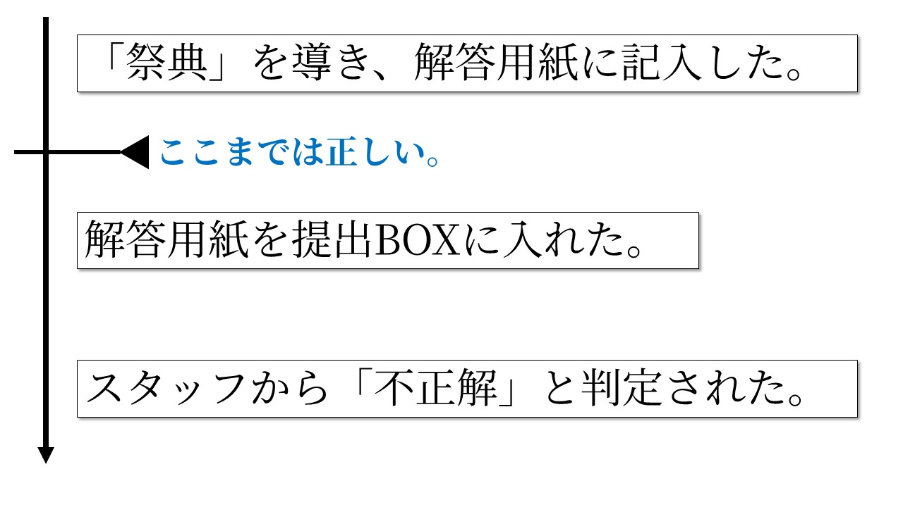
そして提出BOXをよく観察すると、紙を入れる口が真っ赤になっています。
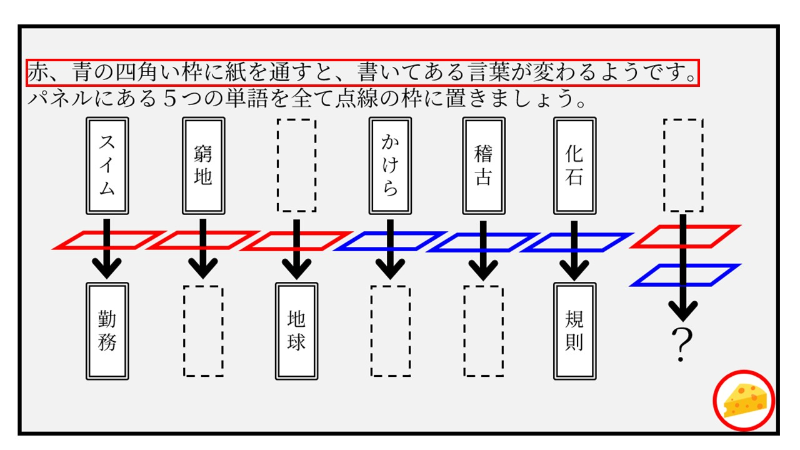
このことから、恐らく「さいてん」という言葉を提出BOXに入れた後、赤枠の法則である惑星の名前「てん」が一つ進んでしまい、
「最下位」という言葉になりスタッフから不正解と判定されたのではないかと推測できます。
ではこの状況を打開するにはどうしたらよかったのでしょうか。
ルールでは「提出BOXに提出された解答用紙をスタッフが判定します」と書かれてあります。
つまり提出BOXの中に「さいてん」と書かれた解答用紙があれば正解と判定されます。
そこから逆算すると、赤い枠線を通すと「さいてん」になる単語、つまり「てん」から一つ戻した「さいど」を記入し、提出BOXに入れれば、
「さいど」に含まれる「ど」が「てん」に進み、最終解答「さいてん」をスタッフに見せることが出来ました。
つまり、納涼祭謎解き上級編では、数々の難問を解き明かし、
最終解答「さいてん」を導いたうえで提出BOXに入れる事で「最下位」になってしまうことに気づき、
それを逆用して「さいど」という言葉を紙に書いて提出した方がクリアとなりました。
この納涼祭という「祭典」も、コロナ前にも参加していた方にしてみれば久々の「再会」と言えるかもしれません。
また機会があれば「再度」極上の謎を用意してお待ちしております。
上級編の解説は以上となります。